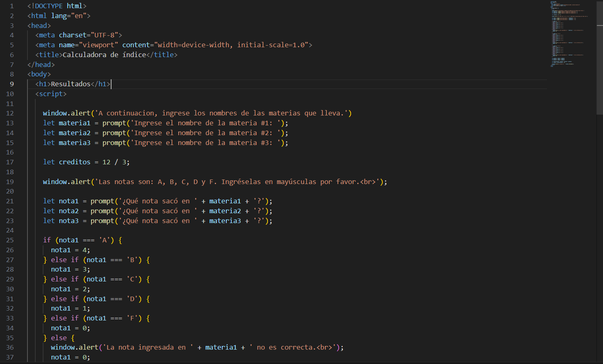
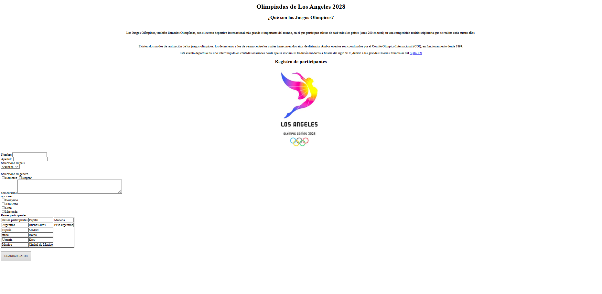

Rhogell Almonte
¡Hola! Soy Rhogell Almonte, un apasionado por la tecnología y estudiante de ciberseguridad. Mi experiencia profesional incluye el rol de IT Technician, donde fui responsable de la administración de sistemas y redes. Mis proyectos académicos y personales abarcan desde la configuración basica de redes con Cisco Packet Tracer hasta el desarrollo de software con lenguajes como C, Javascript, HTML y CSS.
Mi Perfil de LinkedIn
Portafolio de Proyectos
Proyecto 1: Examen HTML
Esta es una breve descripción de mi asignación "examen.html". En este proyecto apliqué conceptos de estructura y semántica de HTML.

Proyecto 2: Olimpiadas HTML
Aquí muestro mi trabajo en la asignación "Olimpiadas.html". Fue un ejercicio práctico para utilizar diferentes etiquetas y estilos básicos.
